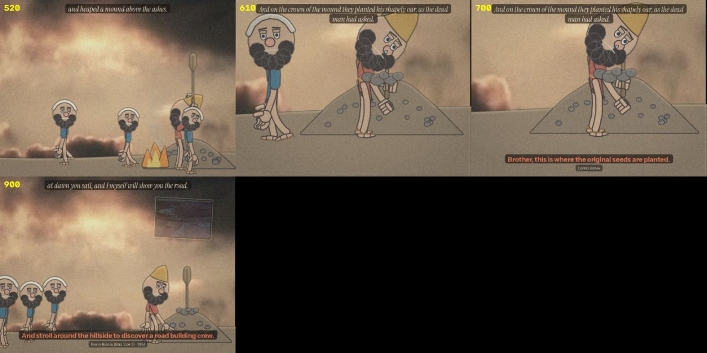
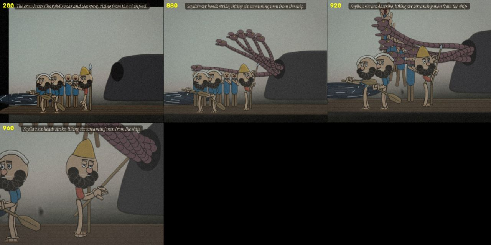
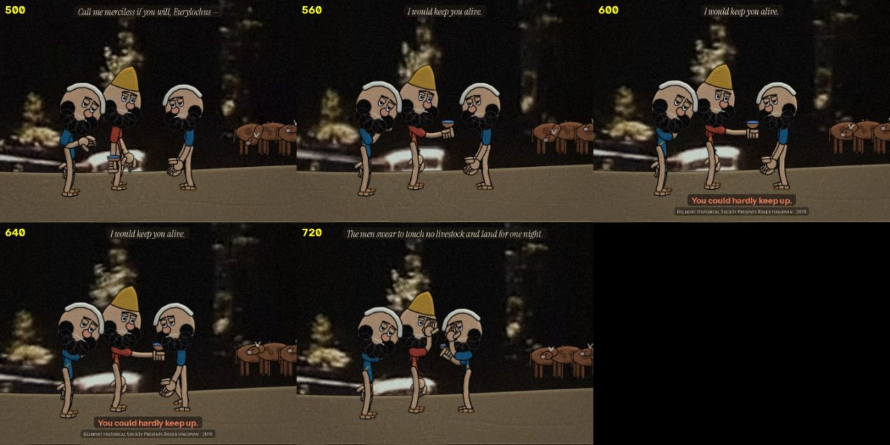
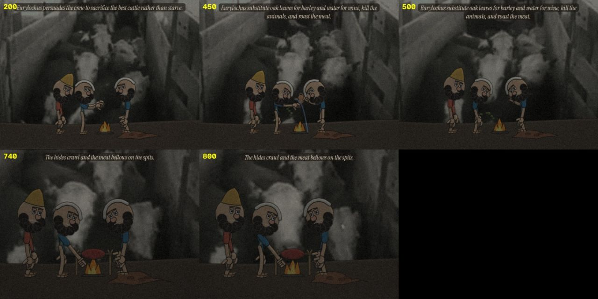
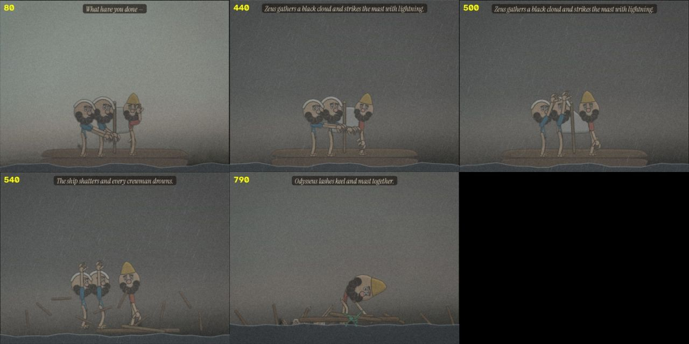

Home / The Found Odyssey / Episode 6 · THE KNOT
Test ODY-E6 The Found Odyssey
Episode 6 · THE KNOT
Book 12, built on hands that hold things: the mast, the cord, the oar. A held object is drawn inside the grip: palm, object, fingers, thumb.
- Running time
- 7:04
- Made
- 2026-10-19
- Program
- The Found Odyssey
- File
- mp4, 960 wide, 41 MB
Production notes · THE FOUND ODYSSEY · Episode 6 · THE KNOT
Book 12 runs as one continuous story, from the mound on Aeaea to Odysseus drifting alone toward Calypso. 7 min 5 s, -16.3 LUFS.
The experiment: hands that hold things
Here it is in order. Click a frame and the film plays from there.
You noticed that hands and held objects kept failing. Before this episode I rebuilt how a hand is drawn in the renderer (ody/toon.py):
- A held object is now drawn inside the grip: the palm first, then the object, then four fingers across the shaft and a thumb over it. Nothing floats beside a fist.
- Open hands, points, fists and flat palms are separate poses instead of one mitten.
- The object is drawn by the near hand. The far hand either draws its own end of the cord or draws nothing.
Every scene in this episode is built on something held: an oar, a stick, wax, a cord, a spear, a cup, a spit's crank, a knot. The theme is the knot. Each line is carried by one pair of hands closing on something.
Episodes 4 and 5 were not re-rendered with the new hands.
The structure carries on from Episodes 4 and 5. Each scene is built around one line:
- the camera goes tight only for that line;
- the score goes silent before it;
- one held gesture carries the line's meaning;
- there are no ink notes and no labels in the frame.
 0:40 “And on the crown of the mound they planted his shapely oar, as the dead man had asked.”
0:40 “And on the crown of the mound they planted his shapely oar, as the dead man had asked.”
scene test The scene rendered on its own before the episode was assembled, to check staging, scale and the line.- Part
- Cold open · the mound
- The line
- "And on the crown of the mound they planted his shapely oar, as the dead man had asked."
- The gesture
- The men heap the mound, one stone each. Odysseus sets the oar from Episode 5 in the crown with both hands, holds it there, then opens both hands and lets go. It stays standing.
- Part
- I · Circe's road
- Sign
- Ve 12, Vector
- The line
- "and bind you tighter when you beg."
- The gesture
- Circe scratches the three paths ahead in the sand with a stick, kneads the wax, winds a green cord round a pole. On the line both hands pull it tight and the pole leans toward her.
 2:47 “But Perimedes and Eurylochus rose and lashed him tighter still,”
2:47 “But Perimedes and Eurylochus rose and lashed him tighter still,” scene test The scene rendered on its own before the episode was assembled, to check staging, scale and the line.
scene test The scene rendered on its own before the episode was assembled, to check staging, scale and the line.- Part
- II · the Sirens
- Sign
- Sn 34b, Sonsign
- The line
- "But Perimedes and Eurylochus rose and lashed him tighter still,"
- The gesture
- The song is offstage and nobody answers it. The crew press wax into their ears. On the line each man pulls one end of the cord across Odysseus's chest, leaning away from him, and they hold. The song cuts out two seconds before.
 3:41 “Scylla's six heads strike, lifting six screaming men from the ship.”
3:41 “Scylla's six heads strike, lifting six screaming men from the ship.”
scene test The scene rendered on its own before the episode was assembled, to check staging, scale and the line.- Part
- III · Scylla and Charybdis
- Sign
- Pl 16, Plastic figure
- The line
- "Scylla's six heads strike, lifting six screaming men from the ship."
- The gesture
- Odysseus takes the spear from the mast and shades his eyes. On the line he holds the spear and does not move while six heads take six men. When the last is up, his hand opens and the spear falls to the deck.
 4:30 “I would keep you alive.”
4:30 “I would keep you alive.” 4:22 “Tiresias and Circe both warned me”
4:22 “Tiresias and Circe both warned me”
scene test The scene rendered on its own before the episode was assembled, to check staging, scale and the line. scene test The scene rendered on its own before the episode was assembled, to check staging, scale and the line.
scene test The scene rendered on its own before the episode was assembled, to check staging, scale and the line.- Part
- IV · the island
- Sign
- Mk 31, Mark
- The line
- "I would keep you alive."
- The gesture
- From "Tiresias and Circe both warned me" the camera does not move: the same two-shot, three times. He holds a cup of water out to Eurylochus on the line and keeps it there. Eurylochus takes it only after the line is over.
 5:14 “The hides crawl and the meat bellows on the spits.”
5:14 “The hides crawl and the meat bellows on the spits.”
scene test The scene rendered on its own before the episode was assembled, to check staging, scale and the line.- Part
- V · the cattle
- Sign
- Wd 29, Weak destiny
- The line
- "The hides crawl and the meat bellows on the spits."
- The gesture
- Oak leaves stand in for barley and water for wine. Eurylochus turns the spit. On the line he stops, his hand stays on the crank, and the hide on the ground moves by itself.
 6:07 “Odysseus lashes keel and mast together.”
6:07 “Odysseus lashes keel and mast together.”
scene test The scene rendered on its own before the episode was assembled, to check staging, scale and the line.- Part
- VI · the storm
- Sign
- Mi 13, Milieu
- The line
- "Odysseus lashes keel and mast together."
- The gesture
- Everything is seen from far off. The bolt, the ship coming apart and the crew going under are all small. On the line he bends over the floating joint of keel and mast, winds the cord and pulls the knot tight. The rain thins two seconds before.

- Part
- After the credits
- Sign
- En 20, Figure of enfeeblement
- The gesture
- He hangs from the fig tree over the whirlpool until the timbers come up with the green knot still on them, drops onto them, and drifts away until he is a speck at the horizon.
The previously segment uses Episode 5's own line, "will you do this for me?": Elpenor holding out his oar. The mound is where that promise is kept.


Sound
This part is about the sound. Watch with it on.
- Each act has its own score, built from the series' lyre motif, quieter under the voices and silent before the line.
- Room tone follows the place: shore, deck, camp fire, open sea with rain.
- The Sirens' song is a thin voice over a lyre phrase, played offstage. It stops before the line and comes back faintly after it.
- The small sounds belong to the gestures:
- the stick in the sand and the wax between fingers;
- the cord tightening;
- the spear landing on the deck;
- the cup touching the hand;
- the crank, the cow lowing, the hide;
- thunder after the bolt, planks, the knot.
Observed and generated
This part separates what came from the archive from what was made here.
- Every spoken line comes from the Found Odyssey CALL tracks for Book 12. The words and their order are unchanged; only the selection and the pauses were chosen (
ody/ep6/cut.py). - The answers are The Found Odyssey's matches, shown as captions and small insets away from the line.
- The plates are from the cineosis-lab library:
- Vivid Sunrise 2 (2007): the mound;
- Lone Cedar (Wide Screen) (2007): Circe;
- Trading Centers of the Pacific Coast (1947): the Sirens;
- Dust Storm (1936): Scylla, the storm and the closing shot;
- an amateur film from the Golden Gate International Exposition (1939): the island;
- Western Cattle Sequence (1936): the cattle.
- Generated: all drawing and animation, the rebuilt hands, the sound effects, the score and the credits.
- New to the cast, in the same ink renderer: Circe's kit of stick, wax and cord; Perimedes and Eurylochus; Scylla's six heads; the cattle; the storm; the speck.

Files
The code, if you want to open it.
- Hands and held objects:
ody/toon.py(hand,holdL,holdR). - Props:
ody/ep6/props6.py. - Scenes:
ody/ep6/s_*.py; rig worlds:crash/m_e6*.js. - Cut list:
ody/ep6/cut.py. - Title, cards, credits and assembly:
ody/ep6/furn6.py.
More from The Found Odyssey
 Episode 1 · NOBODYBook 9 in three minutes: a prompt box asks for the hero's name, the archive asks for "our young friend's", and Odysseus answers "Nobody."
Episode 1 · NOBODYBook 9 in three minutes: a prompt box asks for the hero's name, the archive asks for "our young friend's", and Odysseus answers "Nobody." Episode 2 · THE GUEST-GIFTThe Cyclops again, as a flashback at the Phaeacian feast, told by two tellers who remember it differently. The experiment: the recollection-image.
Episode 2 · THE GUEST-GIFTThe Cyclops again, as a flashback at the Phaeacian feast, told by two tellers who remember it differently. The experiment: the recollection-image. Episode 3 · THE RAFTBook 5 as one story, each act seen from the point of view of whoever is watching it: the gods on their television, Calypso, Poseidon, the sea.
Episode 3 · THE RAFTBook 5 as one story, each act seen from the point of view of whoever is watching it: the gods on their television, Calypso, Poseidon, the sea. Episode 4 · CIRCEBook 10 re-cut around one line per scene, the place where power shifts: the Laestrygonians, Circe, and the order to sail to the house of Death.
Episode 4 · CIRCEBook 10 re-cut around one line per scene, the place where power shifts: the Laestrygonians, Circe, and the order to sail to the house of Death.